Now on iPhone
BE Mastery comes to the App Store, beside Google Play — one account, both phones.
Practise with AI. Shadow real speakers. Practise with real people. Build the confidence for real conversations.
Download BE Mastery
Free on iPhone and Android · Sign in with Apple, Google or email · Your progress follows you between phones · Guidance in 15 languages.

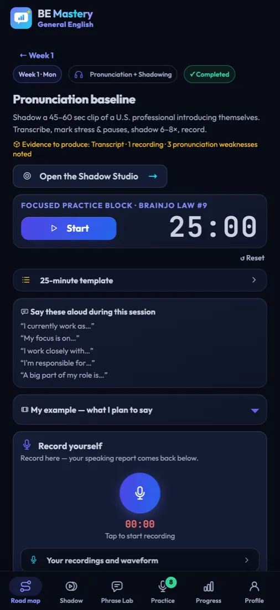


The latest additions to BE Mastery.
BE Mastery comes to the App Store, beside Google Play — one account, both phones.
One tap to back up your progress and carry it between iPhone and Android.
Your streak, today's step and your Recommendations, without opening the app.
Every take plays back the moment you stop, and Phrase Lab reads your text aloud.
534 workplace videos across ten trades, and real workshop lines to shadow.
See each Shadow line in your language and in phonetics, word by word.
Timed rounds with a real partner, and a private report on your side of the call.
Your speaking report, read to you by the coach, with corrections and better words.
Knowing English isn't the same as speaking confidently.
You read it fine. You follow the meeting. Then it's your turn, and the sentence you had ready arrives a beat too late — so you say the shorter, smaller version instead.
That gap isn't knowledge. It's rehearsal. It closes the same way it closes for musicians and athletes: a little, out loud, every day.
One guided session a day for twelve weeks, in four short steps. You don't choose what to study. The road map already knows. You just show up and speak.
Today's phrases, or a real speaker, and the situation they belong to.
Shadow it until the rhythm stops feeling foreign.
Say it in your own voice. This is the part that counts.
How you came across, what to fix, your sentences rebuilt.
Open the app and your page is already waiting: today's session first, then the practice that fits it.
Practise a real conversation — the interview, the stand-up, the salary talk — before it happens.

Speak with another learner who is practising right now, or call them live.
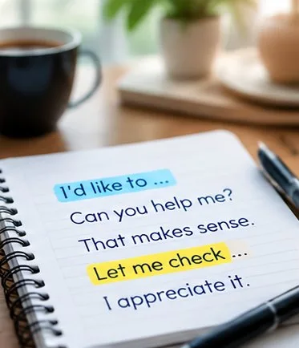
Say it your way, hear it the boardroom way.

Short, interactive drills on the grammar you actually use when you speak.

The words you stumbled on come back until they stop being a stumble.

Twelve weeks, one day at a time. You always know what comes next.
There is more inside than we show here. Open it in the app
Pick a real talk, interview or lesson. Watch it with the words lighting up, shadow it one paragraph at a time, then say it without looking. When you do, it's yours.
Shadow Studio lives in the app. Get the app
So here is where we are. The design is finished, and testing starts on Monday.
The one risk is the supplier, and I will know more by Thursday.
Iwanttomakesurewearealignedbeforewecommittothedeadline.
Je veux m'assurer que nous sommes d'accord avant de nous engager sur l'échéance.
/aɪ wɑnt tə meɪk ʃʊr wi ɑr əˈlaɪnd bɪˈfɔr wi kəˈmɪt tə ðə ˈdɛdˌlaɪn/
The clip loops on this paragraph. Tap a word to hear it, translate it, then record.
Search by topic, or take the pick for this week of your plan. Any video link works too.
Five rounds, each with less help, until the sentence is yours.
Every report is kept, with the words that tripped you, so you pick up where you left off.
The library, Watch, Shadow and Challenge are part of General English. Translation and pronunciation are written by AI and need a connection. The report above is an example; yours is built from your own recording.
responsible for + -ing · since + a start point takes have been + -ing
Talk for a minute about your project, your role or the update you owe someone. The report tells you how you came across, fixes what you got wrong, rebuilds your sentences and gives you better words. Then the coach reads it to you.
Rehearse it on your phone, out loud. Get the app
See who else is practising right now and work through today's speaking task together — in short voice turns, or on a live call.
Practice Partner is part of General English and is for adults (18+).
Practice Partner is in the app. Get the app
Pick someone, or be picked
Not a percentage of a course. The same four things measured on the takes you actually recorded, round after round, so improvement is something you can point at.
An illustration of the report shape — your own numbers come from your own recordings.
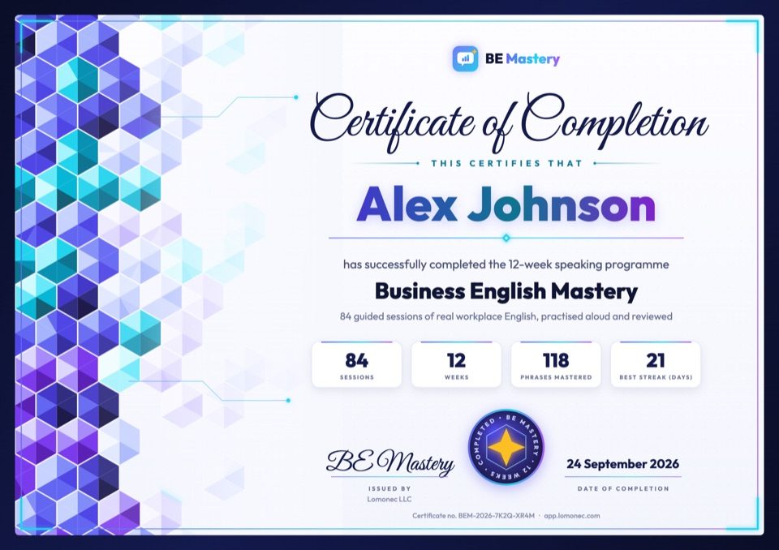
Finish all 84 sessions and it unlocks with your name on it. Download it as a PDF or share it.
It shows you completed the programme. It is not an English-level test. Example shown.Works offline. Recordings are saved on your device — we never keep a copy.
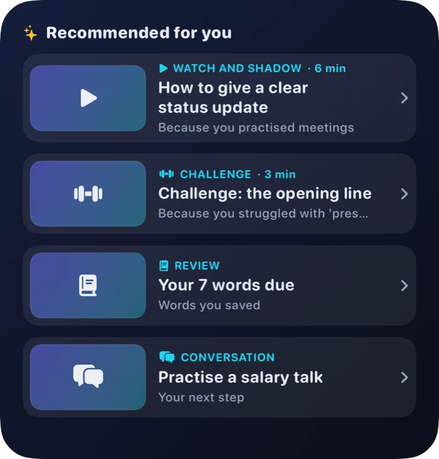


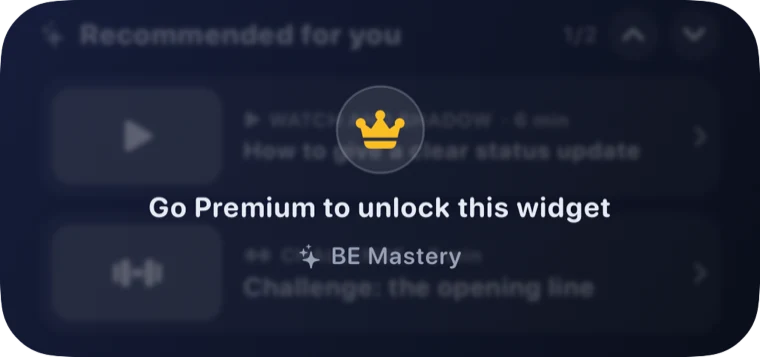
Widgets for iPhone and Android show your streak, today's step and your place on the road map. One tap lands on the exact lesson.
Sign in to use the widgets. The larger widgets and Recommendations are part of Premium.

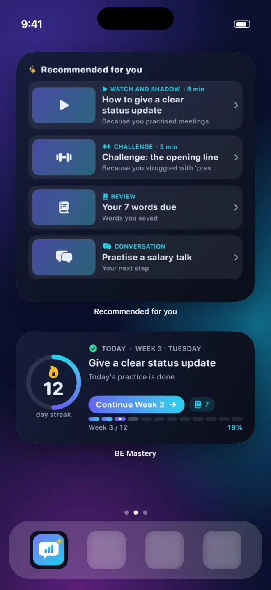
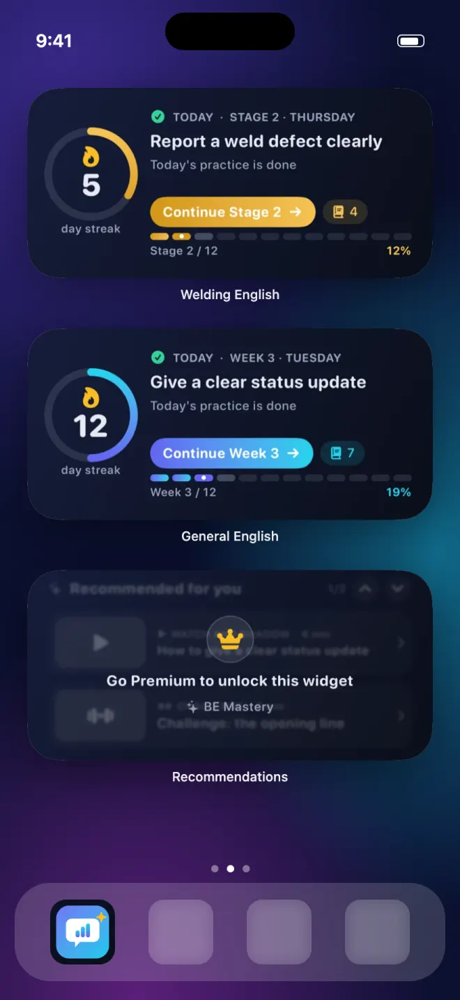
You follow every word, then freeze when it's your turn. Rehearse the update before you give it.
Answer the questions out loud, hear how you came across, and fix it before the day.
Settle in faster: small talk, handovers, calls and the paperwork conversations.
Welders get their own programme: the workshop, safety, quality checks and the interview.
Pick the one that matches the room you actually walk into. They are separate programmes with separate progress — switch whenever you like.
The full speaking system, from foundations to executive communication.
Practice Partner and human practice belong to this programme only.
A technical programme built around the conversations a welder actually has.
Starts with fifteen days of Foundations in your own language if you need them.
A programme of its own for skilled trades. You practise the sentences a supervisor, an inspector and an interviewer actually say — and the answers they expect back.
Choose Welding English when you open the app. Get the app
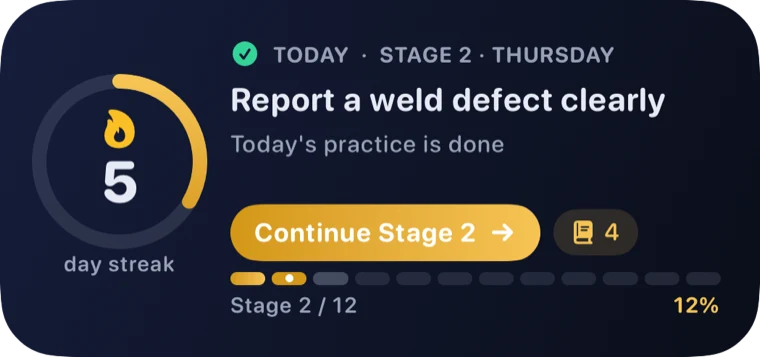
“Check the root pass before you start the fill. Tell me if you see any porosity.”
You“Understood. I'll check the root pass and report any porosity before I start the fill.”
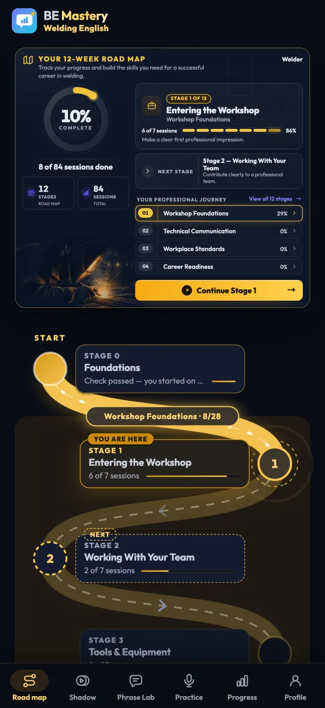

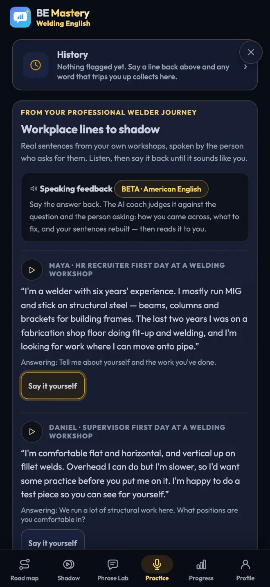
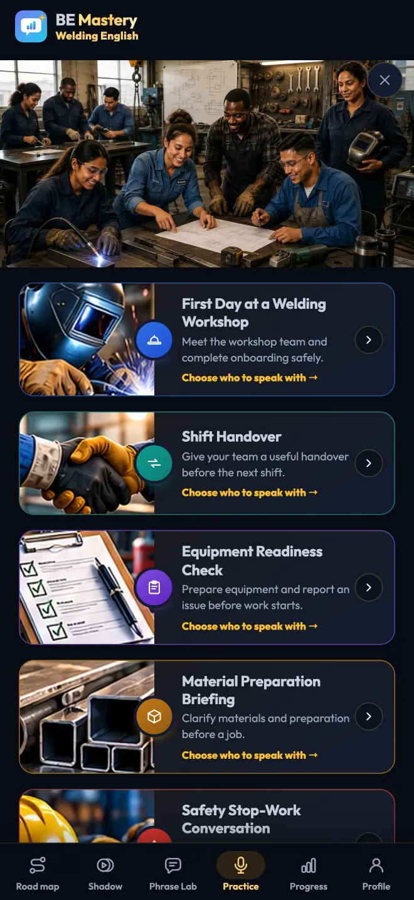

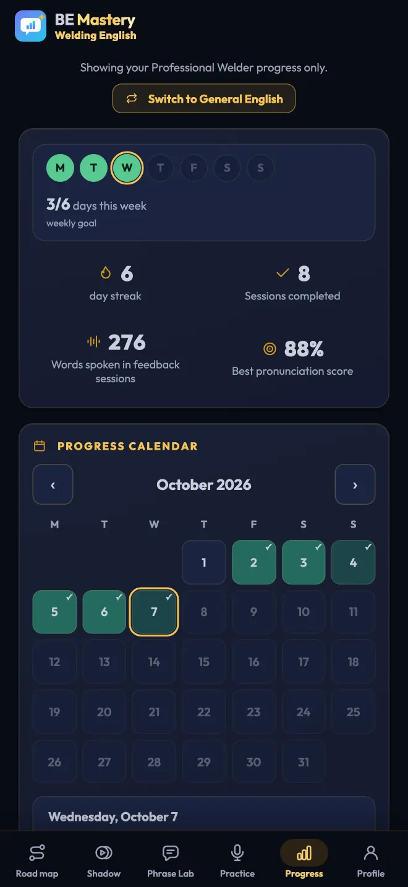
The twelve-week programme, Shadow Studio, the AI coach, Practice Partner and your progress are free today. No card needed.
The whole programme, on iPhone and Android.
One subscription for both programmes, for learners who practise every day. It is not on sale yet — when it is, the price will be shown here and in the store.
Yes. The full twelve-week programme, Shadow Studio, the AI coach, Practice Partner and your progress are free today, with no card needed. A Premium plan is on its way; its price will be shown before anything is charged.
No. You can start straight away. Sign in with Apple, Google or email when you want your progress backed up — then it follows you between your iPhone and your Android phone.
If you can read English but freeze when you speak, you are the learner it was built for. A short check at the start places you, and a gentler Foundations stage is there if you need it.
The guidance, menus and help are available in 15 languages, including French, Spanish, Portuguese and Arabic. The practice itself is in English.
Yes. BE Mastery is on the App Store and on Google Play. Sign in with the same account on both and your progress, words and reports come with you.
Your recordings are saved on your own device. To score a take, it is sent securely to our AI provider and not kept by us. Practice Partner live calls are never recorded.
It is for adults (18+), shows first names only, and has no photos or profiles. You can leave, block or report at any time.
Yes, for welding and the trades around it: welders, pipefitters, boilermakers, millwrights, refinery operators, instrumentation technicians, industrial electricians, HSE officers, NDT technicians and process engineers. Choose Welding English when you open the app.
No. It shows you completed the programme, with your name on it. It is not a level test.
Twenty-five minutes on the train, in the car park, before the meeting. The app records, scores and remembers — and a partner can be waiting when you open it.